Signature
生ハムビスマルク
イタリア産プロシュートをたっぷりと。とろりと落とした卵黄をからめ、ピザ生地とともにお召し上がりください。当店の看板でございます。
池袋駅東口より徒歩二分

記念日のお食事に、心を尽くしたおもてなしに、気のおけない方との一杯に。 厳選した十二種のクラフトビールと、その一杯に寄り添う本格イタリアンをご用意いたしました。 木の温もりを湛えた静かな店内で、ゆっくりとお過ごしくださいませ。
東京駅で親しまれてまいりました「NIHONBASHI BREWERY.T.S」が、 池袋に新たな一軒を構えました。
厳選した十二種のクラフトビールを常時ご用意し、お料理はすべて 「ビールとの相性」を起点に組み立てております。 照明を控えた落ち着きのある店内は、木の温もりを活かした設えです。 カウンター席とテーブル席をご用意し、おひとりでの一杯から、 大切な方とのお食事まで、静かにお迎えいたします。

IPA、ペールエール、スタウトなど、個性の異なる樽を常時十二種。飲み比べのうちに、お好みの一杯が見つかります。
イタリア産プロシュートの生ハムビスマルク、ウニクリームパスタ。いずれもビールとの相性を考えて仕立てております。
お勤め帰りの一杯にも、お買い物のあとのお食事にも。気軽にお立ち寄りいただける場所にございます。

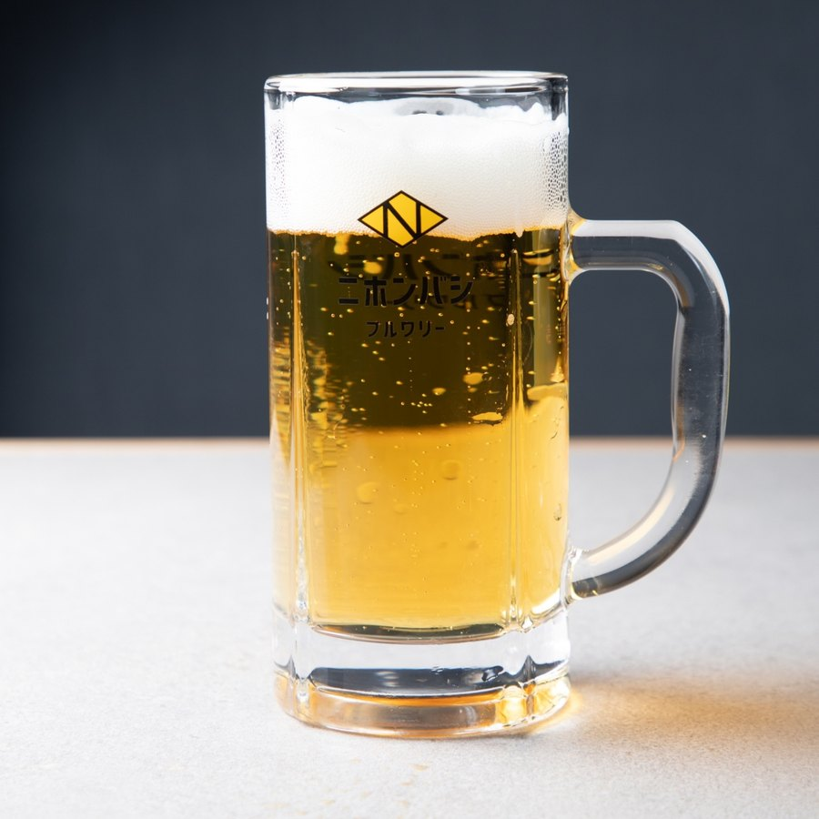
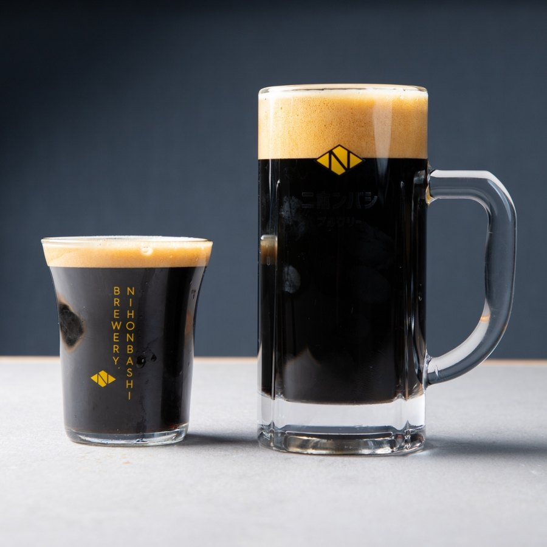
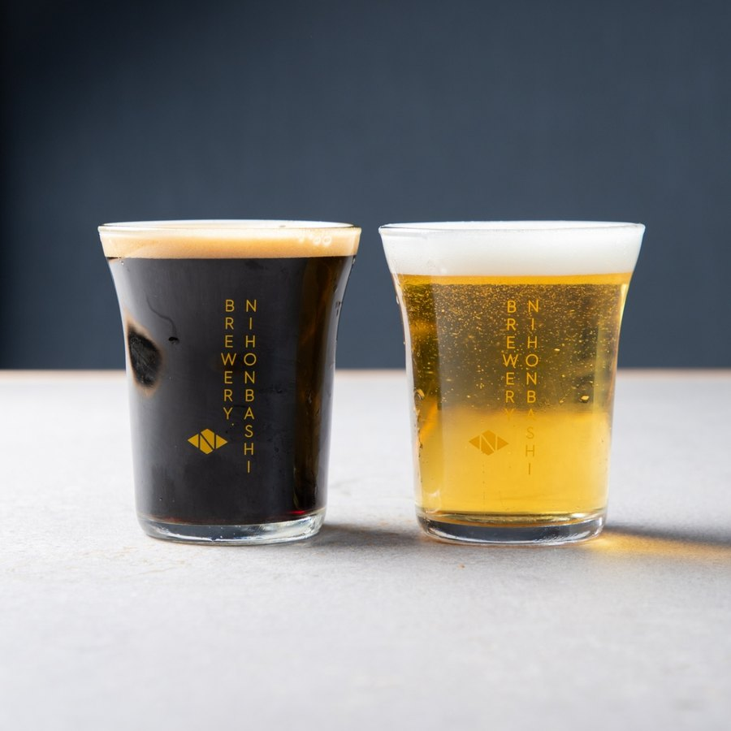
India Pale Ale
ホップの香りと苦みがはっきりと立つ一杯。味の濃いお料理や揚げ物とよく合います。
Pale Ale
華やかな香りと、ほどよい飲みごたえ。はじめの一杯にもおすすめしております。
Stout
ローストの香ばしさと深いコク。食後のデザートと合わせてもお楽しみいただけます。
and more
季節や入荷に合わせ、個性豊かな銘柄をご用意しております。お好みをお聞かせください。
※ 提供銘柄は日によって異なります。最新のご案内は店頭またはSNSにてご確認くださいませ。
ビールとともにお楽しみいただける、本格イタリアンをご用意しております。
Signature
イタリア産プロシュートをたっぷりと。とろりと落とした卵黄をからめ、ピザ生地とともにお召し上がりください。当店の看板でございます。

Pasta
ウニを贅沢にあしらった濃厚な一皿。クリーミーな余韻に、キレのある一杯を合わせてお楽しみください。

Pasta
バジルの香りに魚介の甘み、仕上げにスダチの爽やかさを。軽やかなエールとともにどうぞ。

Dessert
濃厚な味わいの自家製プリン。スタウトと合わせて、静かに一日を締めくくっていただければ幸いです。
※ 掲載のお品書きは一例です。内容・価格は変更になる場合がございます。
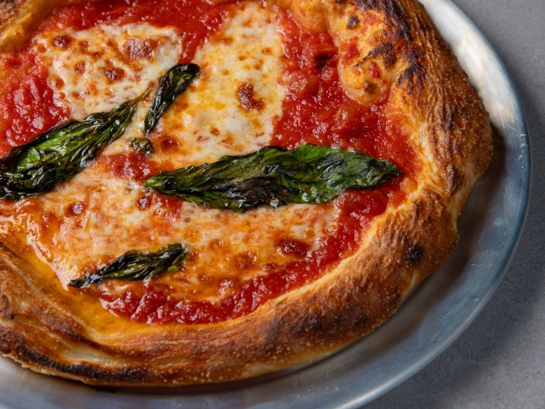
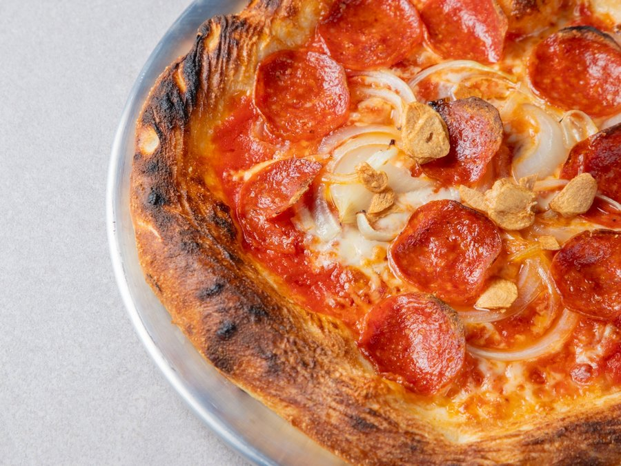
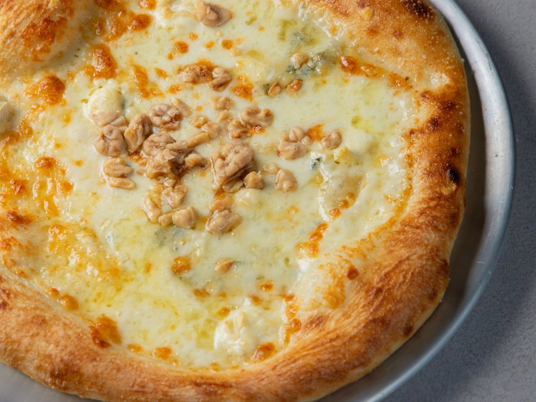
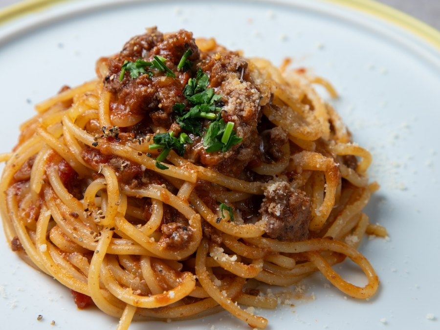
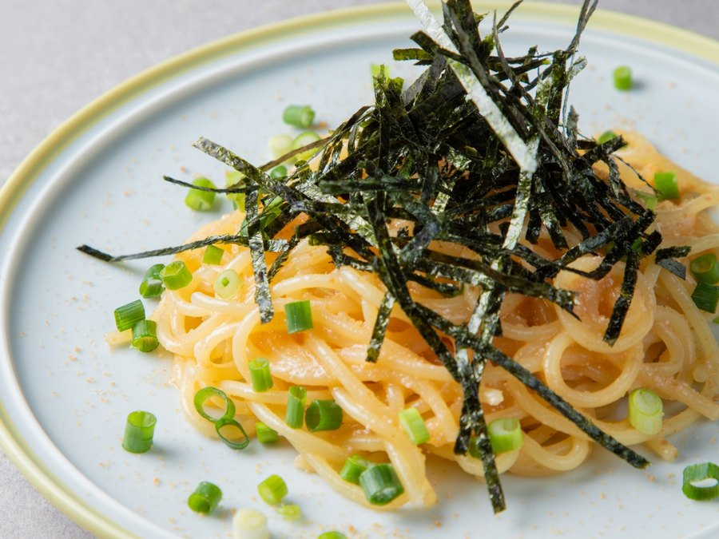
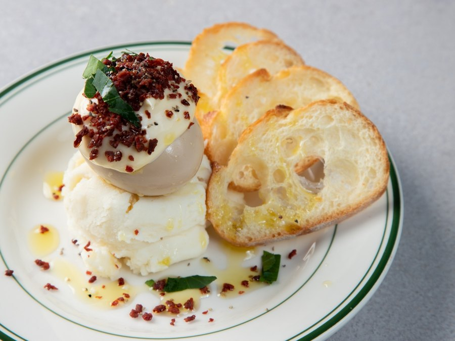
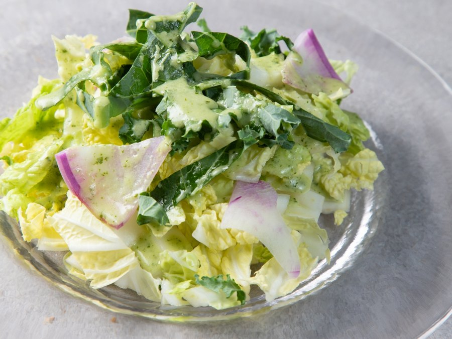
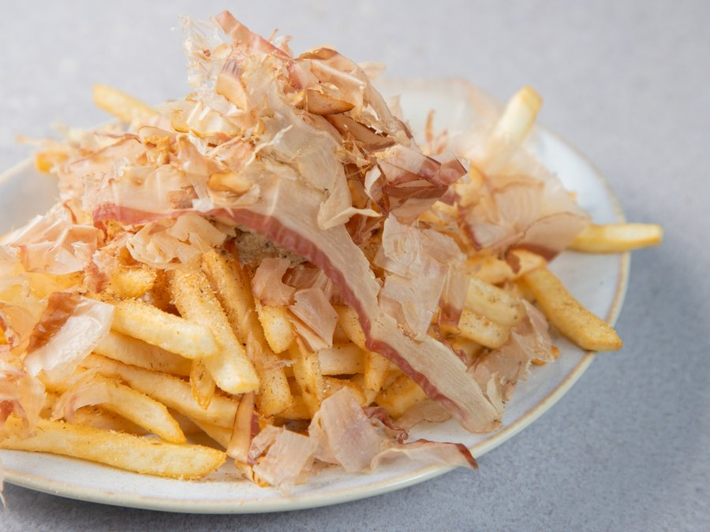
※ 写真は一例です。お品書きの正式な品名・価格は店頭にてご確認くださいませ。

ランチタイムは十一時より承っております。 ピザ・パスタには、おかわり自由のスムージーとサラダをお付けしております。
月〜木 11:00 – 15:00 (14:00 L.O.)
金・土 11:00 – 23:00 通し営業
日・祝 11:00 – 22:00 通し営業
※ スムージー・サラダのご提供はランチタイムのみとなります。
※ ご予算の目安：ランチ ¥1,000〜／ディナー ¥3,000〜
照明を控えた落ち着きのある空間で、静かにお過ごしいただけます。
取り分けやすいお料理と、飲み比べのお愉しみをご用意しております。
カウンター席にて、お一人でも気兼ねなくお過ごしいただけます。
東口でのお買い物の帰りに、そのままお立ち寄りいただけます。
カウンター席とテーブル席をあわせて五十席。目の前に並ぶタップから、その日の一杯をお選びいただけます。


お席のご予約、貸切のご相談を承っております。
営業時間内に承ります。当日のご予約はお電話が確実でございます。
電話をかける二十四時間受付。日付とご人数をお選びいただき、その場でご予約いただけます。
予約ページを開く※ 当日のご予約・ご変更・キャンセルはお電話にて承ります
最新のビールのご案内も掲載しております。DMからもお問い合わせいただけます。
@ikbbrewery